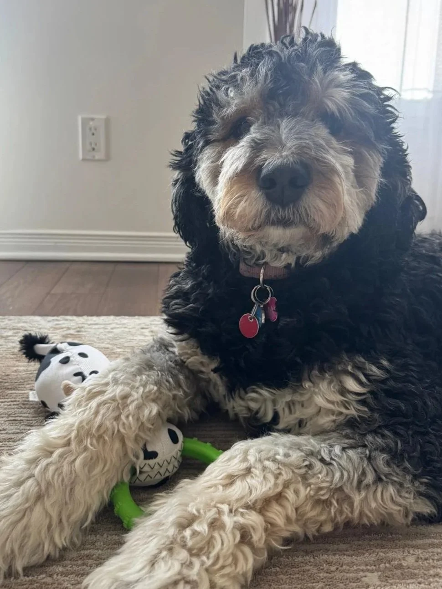

My Dog and the amazon delivery guy
I use this exact pain analogy with almost every client I see.

I use this exact pain analogy with almost every client I see.

Meet Luna. Sweet girl right?
I certainly think so.
But she has a mean bark, and for some reason she goes absolutely berzerk at the amazon guy (so in the unlikely case that you’re reading this Mr Amazon Delivery Man, sorry mate)
Amazon guy = not a threat
Someone climbing over the back fence = probably a threat
So it’s our job to help Luna distinguish between intruders worth alerting us for, versus something harmless like a squirrel (she barks at them too. Must be exhausting.)
Turns out, pain signals can be explained in the same way.
Our central nervous system (CNS) has the job of detecting threats. And sometimes, it does a great job of that, like if ever you’ve stubbed your toe during that 3am pee trip in the dark. Worst kind of pain ammaright?
But sometimes, in a heightened state of alertness, the CNS will sound the alarm for something that in actual fact isn’t that dangerous at all. Or, perhaps was, but is no longer.
It’s one of the reasons why pain lingers long after an injury occurs.
Chronic low back pain, for example, may be largely explained by our threat detection system running disproportionately high, and not necessarily because there’s something awful going on in there.
(think Luna barking at a man walking up the drive, then continuing to bark even though it turns out to be the postman. Like, relax already.)
So it’s my job as a strength and rehab guy to help clients build a body that’s 1) strong and reslient enough to dampen those pain signals, but also 2) to help them to reshape their understanding of what pain is, using analogies like this one.
The take-home:
Long-term pain doesn’t mean your broken, or breaking. It might mean your threat detection system is firing on all cylinders, and we just need to help it calm down a bit.
Hope this helps you in some way! And if you’ve been dealing with an injury or pain that’s lasted longer than you’d expected, hit the button below and tell me a bit about it. I’ll get back to you soon.
Tap to get out of pain